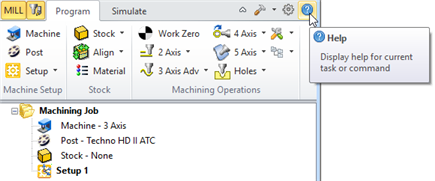

Each RhinoCAM module (i.e., MILL, TURN, etc.) has its own context sensitive online Help system that can be accessed by pressing the Help button from any dialog or by selecting the Help icon located within the Browser of each module. Please use the Table of Contents as a starting point to browse through the various topics of interest. You can also use the keyword search to locate topics of interest to you. Click here to find out where to go for more help and resources. Each RhinoCAM module (i.e., MILL, TURN, etc.) has its own context sensitive online Help system that can be accessed by pressing the Help button from any dialog or by selecting the Help icon located within the Browser of each module. Please use the Table of Contents as a starting point to browse through the various topics of interest. You can also use the keyword search to locate topics of interest to you. Click here to find out where to go for more help and resources.
 Locate the RhinoCAM Browser Help Icon |